El universo es el conjunto de todas las entidades físicamente detectables que interactúan entre ellas dentro del espacio-tiempo de acuerdo a leyes físicas bien definidas. Sin embargo, el término también se utiliza informalmente en sentidos contextuales ligeramente diferentes y alude a conceptos como cosmos, mundo, naturaleza o realidad. Su estudio, en las mayores escalas, es el objeto de la cosmología, disciplina basada en la astronomía y la física, en la cual se describen todos los aspectos de este universo con sus fenómenos. Las ciencias físicas modelizan el universo como un sistema cerrado que contiene energía y materia adscritas al espacio-tiempo y que se rige fundamentalmente por principios causales. Basándose en observaciones del universo observable, los físicos intentan describir el continuo espacio-tiempo en el que nos encontramos, junto con toda la materia y energía existentes en él.
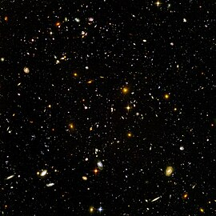La teoría actualmente más aceptada sobre la formación del universo fue teorizada por el canónigo belga Georges Lemaître, a partir de las ecuaciones de Albert Einstein. Lemaître concluyó (en oposición a lo que pensaba Einstein) que el universo no era estacionario, sino que tenía un origen. Este es el modelo del Big Bang, que describe la expansión del espacio-tiempo a partir de una singularidad espaciotemporal. El universo experimentó un rápido periodo de inflación cósmica que arrasó todas las irregularidades iniciales. A partir de entonces el universo se expandió y se convirtió en estable, más frío y menos denso. Las variaciones menores en la distribución de la masa dieron como resultado la segregación fractal en porciones, que se encuentran en el universo actual como cúmulos de galaxias.
Los cosmólogos teóricos y astrofísicos usan de manera diferente el término universo, designando bien el sistema completo o únicamente una parte de él. A menudo se emplea el término el universo para designar la parte observable del espacio-tiempo o el espacio-tiempo entero. Según el convenio de los cosmólogos, el término universo se refiere frecuentemente a la parte finita del espacio-tiempo que es directamente observable utilizando telescopios, otros detectores y métodos físicos, teóricos y empíricos para estudiar los componentes básicos del universo y sus interacciones. Los físicos cosmólogos asumen que la parte observable del espacio comóvil (también llamado nuestro universo) corresponde a una parte del espacio entero y normalmente no es el espacio entero.
En el caso del universo observable, este puede ser solo una mínima porción del universo existente y, por consiguiente, puede ser imposible saber realmente si el universo está siendo completamente observado. La mayoría de cosmólogos creen que el universo observable es una parte extremadamente pequeña del universo «entero» realmente existente y que es imposible ver todo el espacio comóvil. En la actualidad se desconoce si esto es correcto, ya que de acuerdo a los estudios de la forma del universo, es posible que el universo observable esté cerca de tener el mismo tamaño que todo el espacio. La pregunta sigue debatiéndose
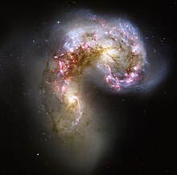El hecho de que el universo esté en expansión se deriva de las observaciones del corrimiento al rojo realizadas en la década de 1920 y que se cuantifican por la ley de Hubble. Dichas observaciones son la predicción experimental del modelo de Friedmann-Robertson-Walker, que es una solución de las ecuaciones de campo de Einstein de la relatividad general, que predicen el inicio del universo mediante un big bang. El "corrimiento al rojo" es un fenómeno observado por los astrónomos, que muestra una relación directa entre la distancia de un objeto remoto (como una galaxia) y la velocidad con la que este se aleja. Si esta expansión ha sido continua a lo largo de la vida del universo, entonces en el pasado estos objetos distantes que siguen alejándose tuvieron que estar una vez juntos. Esta idea da pie a la teoría del Big Bang, el modelo dominante en la cosmología actual. Durante la era más temprana del Big Bang, se cree que el universo era un caliente y denso plasma. Según avanzaba la expansión, la temperatura decrecía hasta el punto en que se pudieron formar los átomos. En aquella época, la energía de fondo se desacopló de la materia y fue libre de viajar a través del espacio. La energía remanente continuó enfriándose al expandirse el universo y hoy forma el fondo cósmico de microondas. Esta radiación de fondo es remarcablemente uniforme en todas las direcciones, circunstancia que los cosmólogos han intentado explicar como reflejo de un periodo temprano de inflación cósmica después del Big Bang. El examen de las pequeñas variaciones en el fondo de radiación de microondas proporciona información sobre la naturaleza del universo, incluyendo la edad y composición. La edad del universo desde el Big Bang, de acuerdo a la información actual proporcionada por el WMAP de la NASA, se estima en unos 13,700 millones de años, con un margen de error de un 1 % (137 millones de años). Otros métodos de estimación ofrecen diferentes rangos de edad, desde 11 000 millones a 20 000 millones.
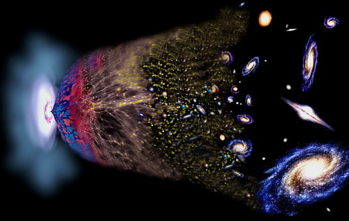Muy poco se conoce con certeza sobre el tamaño del universo. Puede tener una longitud de billones de años luz o incluso tener un tamaño infinito. Un artículo de 2003 dice establecer una cota inferior de 24 gigaparsecs (78 000 millones de años luz) para el tamaño del universo, pero no hay ninguna razón para creer que esta cota está de alguna manera muy ajustada (Véase forma del universo). El universo observable (o visible), que consiste en toda la materia y energía que podría habernos afectado desde el Big Bang dada la limitación de la velocidad de la luz, es ciertamente finito. La distancia comóvil al extremo del universo visible ronda los 46,500 millones de años luz en todas las direcciones desde la Tierra. Así, el universo visible se puede considerar como una esfera perfecta con la Tierra en el centro, y un diámetro de unos 93 000 millones de años luz. Hay que notar que muchas fuentes han publicado una amplia variedad de cifras incorrectas para el tamaño del universo visible: desde 13 700 hasta 180 000 millones de años luz. (Véase universo observable). En el universo las distancias que separan los astros son tan grandes que, si las quisiéramos expresar en metros, tendríamos que utilizar cifras muy grandes. Debido a ello, se utiliza como unidad de longitud el año luz, que corresponde a la distancia que recorre la luz en un año. Anteriormente, el modelo de universo más comúnmente aceptado era el propuesto por Albert Einstein en su Relatividad General, en la que propone un universo "finito pero ilimitado", es decir, que a pesar de tener un volumen medible no tiene límites, de forma análoga a la superficie de una esfera, que es medible pero ilimitada. Esto era propio de un universo esférico. Hoy, gracias a las últimas observaciones realizadas por el WMAP de la NASA, se sabe que tiene forma plana. Aunque no se descarta un posible universo plano cerrado sobre sí mismo. Estas observaciones sugieren que el universo es infinito.
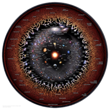Una pregunta importante abierta en cosmología es la forma del universo. Matemáticamente, ¿qué variedad representa mejor la parte espacial del universo? Si el universo es espacialmente plano, se desconoce si las reglas de la geometría Euclidiana serán válidas a mayor escala. Actualmente muchos cosmólogos creen que el universo observable está muy cerca de ser espacialmente plano, con arrugas locales donde los objetos masivos distorsionan el espacio-tiempo, de la misma forma que la superficie de un lago es casi plana. Esta opinión fue reforzada por los últimos datos del WMAP, mirando hacia las "oscilaciones acústicas" de las variaciones de temperatura en la radiación de fondo de microondas. Por otra parte, se desconoce si el universo es conexo. El universo no tiene cotas espaciales de acuerdo al modelo estándar del Big Bang; sin embargo debe ser espacialmente finito (compacto). Esto se puede comprender utilizando una analogía en dos dimensiones: la superficie de una esfera no tiene límite, pero no tiene un área infinita. Es una superficie de dos dimensiones con curvatura constante en una tercera dimensión. La 3-esfera es un equivalente en tres dimensiones en el que las tres dimensiones están constantemente curvadas en una cuarta. Si el universo fuese compacto y sin cotas, sería posible, después de viajar una distancia suficiente, volver al punto de partida. Así, la luz de las estrellas y galaxias podría pasar a través del universo observable más de una vez. Si el universo fuese múltiplemente conexo y suficientemente pequeño (y de un tamaño apropiado, tal vez complejo) entonces posiblemente se podría ver una o varias veces alrededor de él en alguna (o todas) direcciones. Aunque esta posibilidad no ha sido descartada, los resultados de las últimas investigaciones de la radiación de fondo de microondas hacen que esto parezca improbable.
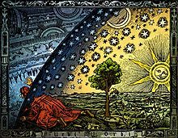Mientras que la estructura está considerablemente fractalizada a nivel local (ordenada en una jerarquía de racimo), en los órdenes más altos de distancia el universo es muy homogéneo. A estas escalas la densidad del universo es muy uniforme, y no hay una dirección preferida o significativamente asimétrica en el universo. Esta homogeneidad e isotropía es un requisito de la métrica de Friedman-Lemaître-Robertson-Walker empleada en los modelos cosmológicos modernos y que se muestra de acuerdo con el principio cosmológico. La cuestión de la anisotropía en el universo primigenio fue significativamente contestada por el WMAP, que buscó fluctuaciones en la intensidad del fondo de microondas. Las medidas de esta anisotropía han proporcionado información útil y restricciones sobre la evolución del universo. Hasta el límite de la potencia de observación de los instrumentos astronómicos, los objetos irradian y absorben la energía de acuerdo a las mismas leyes físicas a como lo hacen en nuestra propia galaxia. Basándose en esto, se cree que las mismas leyes y constantes físicas son universalmente aplicables a través de todo el universo observable. No se ha encontrado ninguna prueba confirmada que muestre que las constantes físicas hayan variado desde el Big Bang
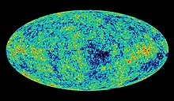El universo observable actual parece tener un espacio-tiempo geométricamente plano, conteniendo una densidad masa-energía equivalente a 9,9 × 10−30 gramos por centímetro cúbico. Los constituyentes primarios parecen consistir en un 73 % de energía oscura, 23 % de materia oscura fría y un 4 % de átomos. Así, la densidad de los átomos equivaldría a un núcleo de hidrógeno sencillo por cada cuatro metros cúbicos de volumen. La naturaleza exacta de la energía oscura y la materia oscura fría sigue siendo un misterio. Actualmente se especula con que el neutrino (una partícula muy abundante en el universo) tenga, aunque mínima, una masa. De comprobarse este hecho, podría significar que la energía y la materia oscura no existen.
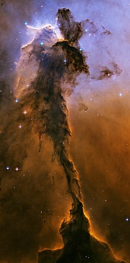A gran escala, el universo está formado por galaxias y agrupaciones de galaxias. Las galaxias son agrupaciones masivas de estrellas, y son las estructuras más grandes en las que se organiza la materia en el universo. A través del telescopio se manifiestan como manchas luminosas de diferentes formas. A la hora de clasificarlas, los científicos distinguen entre las galaxias del Grupo Local, compuesto por las treinta galaxias más cercanas y a las que está unida gravitacionalmente nuestra galaxia (la Vía Láctea), y todas las demás galaxias, llamadas "galaxias exteriores". Las galaxias están distribuidas por todo el universo y presentan características muy diversas, tanto en lo que respecta a su configuración como a su antigüedad. Las más pequeñas abarcan alrededor de 400 000 millones de estrellas, y las galaxias de mayor tamaño pueden llegar a abarcar más de un billón de astros. Estas últimas pueden tener un diámetro de 170 000 años luz, mientras que las primeras no suelen exceder los 6000 años luz. Además de estrellas y sus astros asociados (planetas, asteroides, etcétera), las galaxias contienen también materia interestelar, constituida por polvo y gas en una proporción que varía entre el 1 y el 10 % de su masa. Se estima que el universo puede estar constituido por unos 100 000 millones de galaxias, aunque estas cifras varían en función de los diferentes estudios
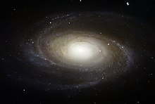La Vía Láctea es nuestra galaxia. Según las observaciones, posee una masa de 10 masas solares y es de tipo espiral barrada. Con un diámetro medio de unos 100 000 años luz se calcula que contiene unos 200 000 millones de estrellas, entre las cuales se encuentra el Sol. La distancia desde el Sol al centro de la galaxia es de alrededor de 27 700 años luz (8,5 kpc). A simple vista, se observa como una estela blanquecina de forma elíptica, que se puede distinguir en las noches despejadas. Lo que no se aprecian son sus brazos espirales, en uno de los cuales, el llamado brazo de Orión, está situado nuestro sistema solar, y por tanto la Tierra. El núcleo central de la galaxia presenta un espesor uniforme en todos sus puntos, salvo en el centro, donde existe un gran abultamiento con un grosor máximo de 16 000 años luz, siendo el grosor medio de unos 6000 años luz
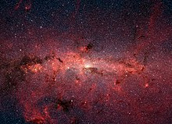Son los elementos constitutivos más destacados de las galaxias. Las estrellas son enormes esferas de gas que brillan debido a sus gigantescas reacciones nucleares. Debido a la fuerza gravitatoria, la presión y a la temperatura del interior de una estrella que sea suficientemente intensa, se inicia la fusión nuclear de sus átomos, y comienzan a emitir una luz roja oscura, que después se mueve hacia el estado superior, que es en el que está nuestro Sol, para posteriormente, al modificarse las reacciones nucleares interiores, dilatarse y finalmente enfriarse
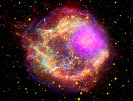Los planetas son cuerpos que giran en torno a una estrella y que, según la definición de la Unión Astronómica Internacional, deben cumplir además la condición de haber limpiado su órbita de otros cuerpos rocosos importantes, y de tener suficiente masa como para que su fuerza de gravedad genere un cuerpo esférico. En el caso de cuerpos que orbitan alrededor de una estrella que no cumplan estas características, se habla de planetas enanos, planetesimales, o asteroides. En nuestro Sistema Solar hay 8 planetas: Mercurio, Venus, Tierra, Marte, Júpiter, Saturno, Urano y Neptuno, considerándose desde 2006 a Plutón como un planeta enano. A finales de 2009, fuera de nuestro Sistema Solar se habían detectado más de 400 planetas extrasolares, pero los avances tecnológicos están permitiendo que este número crezca a buen ritmo.
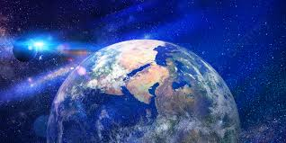